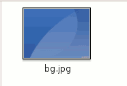
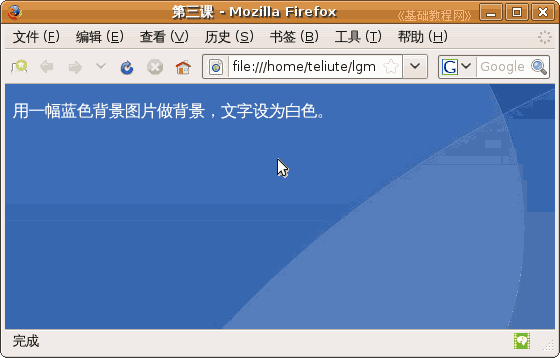

CSS 基础入门教程
作者：TeliuTe 来源：基础教程网
除了给网页设置背景色外，我们还可以使用图片作为背景，下面我们来看一个练习；
1、文本编辑器
1）打开记事本或 gedit、leafpad 文本编辑器，gedit 在查看菜单里选择“HTML”；
2）点菜单“文件－保存”命令，以“lx3.html”为文件名，类型所有文件，编码 UTF-8，保存到自己的文件夹；
3）按照基础02课的方法，输入 <html> 、 <head> 和 <body> 的内容；
2、背景图片
1）背景图显示在网页底层，可以选择较大的图片作背景，也可以选择较小的图片平铺来填充背景；
本课的 images 文件夹里有一幅背景图；

2）这一课里是把图片跟网页文件放在一起，它们俩在一个位置里，找到 <body> 标签，在它里面输入下面的内容；
<body style="background-image:url('bg.jpg');">
<p style="color:#ffffff;">用一幅蓝色背景图片做背景，文字设为白色。</p>
3）第一行是在 <body>，标签里指定背景图，在两个单引号里，默认是平铺，
第二行是文字样式，全部f是白色，全0是黑色；
4）保存一下文件，回到自己文件夹里，打开 lx3 网页，看一下背景图的效果；

本节学习了给网页添加背景图的基本操作，如果你成功地完成了练习，请继续学习下一课内容；
本教程由86团学校TeliuTe制作|著作权所有
基础教程网：http://teliute.org/
美丽的校园……
转载和引用本站内容，请保留版权信息和本站链接。